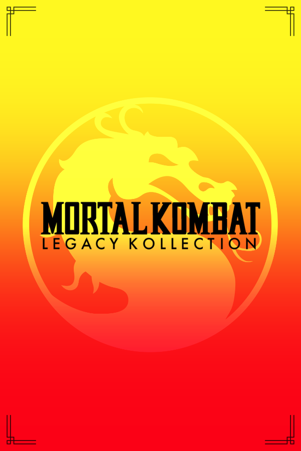

Game profile

Mortal Kombat Legacy Kollection
Every archived year-end list appearance, including placement and points earned.
About the Game
Mortal Kombat Legacy Kollection is a fighting game. It came out on 30-10-2025. Mortal Kombat Legacy Kollection is available on Nintendo Switch, Xbox One, Xbox Series S/X and PlayStation 4.
| Released | 2025-10-30 |
|---|---|
| Genres | Fighting |
| Platforms | Nintendo Switch, Xbox One, Xbox Series S/X, PlayStation 4, PlayStation 5, PC |
Game information provided by RAWG.
1List appearances
1Years represented
Points by Year
12025 points
List History
| Year | Source | List | Placement | Points |
|---|---|---|---|---|
| 2025 | GameSpot | The Best Games Of 2025 | Unranked | 1 |